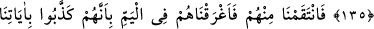
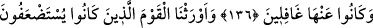
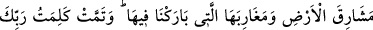
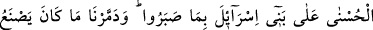
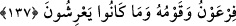
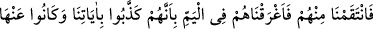
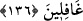

FİRAVUN’UN
DENİZDE BOĞULMASI
135. Biz, ulaşacakları bir müddete kadar onlardan azabı kaldırınca hemen
sözlerinden dönüverdiler.
136. Biz de ayetlerimizi yalanlamaları ve onlardan gafil kalmaları sebebiyle
kendilerinden intikam aldık ve onları denizde boğduk.
137. Hor görülüp ezilmekte olan o kavmi (yahudileri) de, içini bereketle
doldurduğumuz yerin doğu taraflarına ve batı taraflarına mirasçı kıldık. Sabırlarına
karşılık Rabbinin İsrailoğullarına verdiği güzel söz yerine geldi. Firavun ve
kavminin yapmakta olduklarını ve yetiştirdikleri bahçeleri helâk ettik.
“Biz onlardan, ulaşacakları bir süreye” azab olunacakları veya helak edilecekleri
belirli zamânâ, yani boğulma zamanına “kadar azabı kaldırınca, hemen yeminlerini
bozuverdiler.” Yani onlardan azabı kaldırır kaldırmaz hiç düşünmeden ve beklemeden
hemen yeminlerini bozdular.
136. Biz de ayetlerimizi yalanlamaları ve onlardan gafil kalmaları sebebiyle
kendilerinden intikam aldık ve onları denizde boğduk.
“Biz de onlardan öç aldık,” Ayetin başındaki “fâ” harfi intikam ve azabın sebebinin
yeminlerini bozmaları olduğuna delâlet eder. İntikamdan maksat onun neticesi olan
helâk etmektir. Gazab da intikam gibidir. Çünkü Allah Teâlâ’nın intikam ve hınç alması
muhaldir.